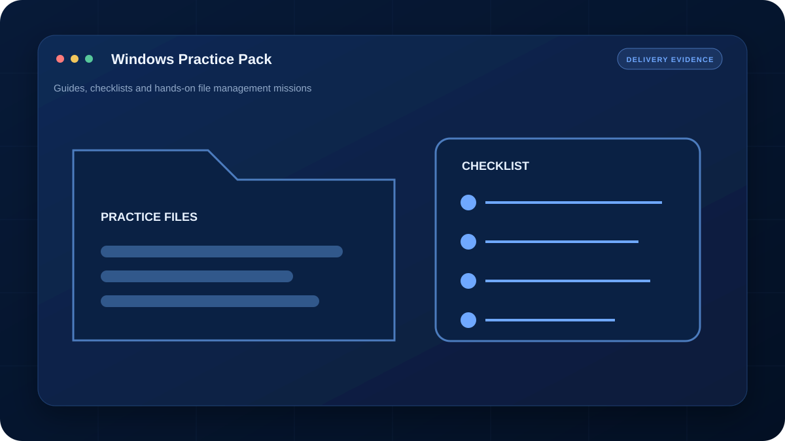
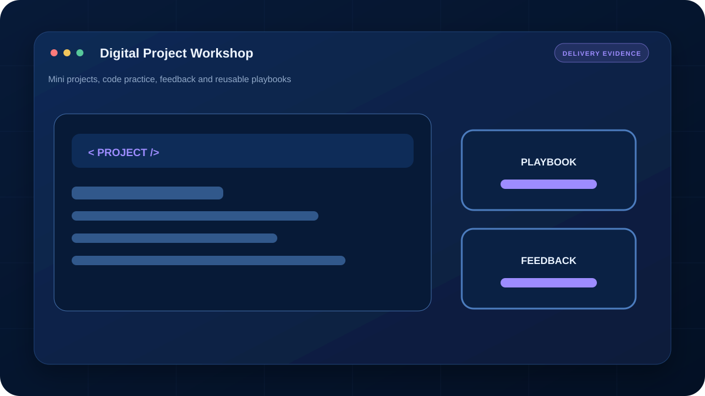
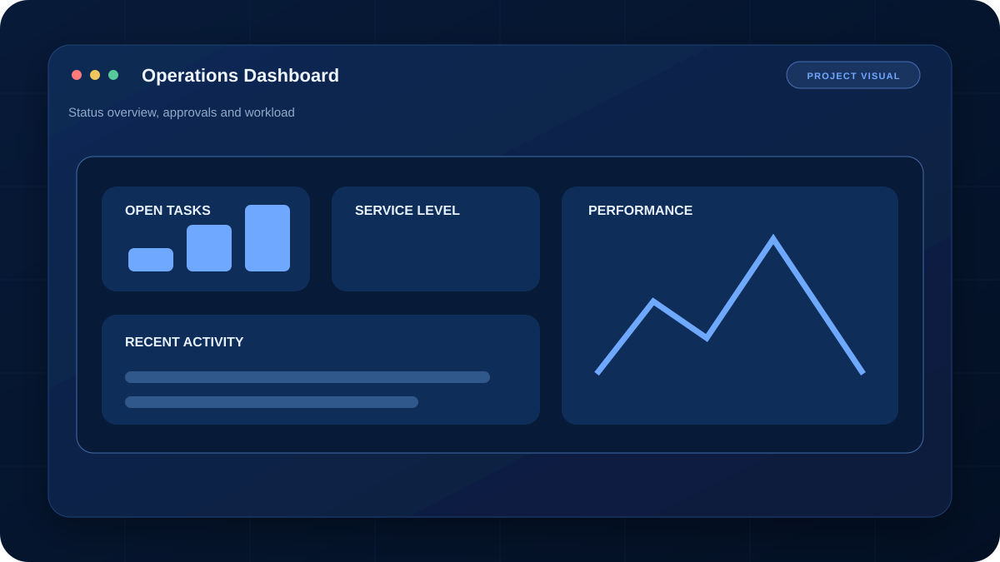
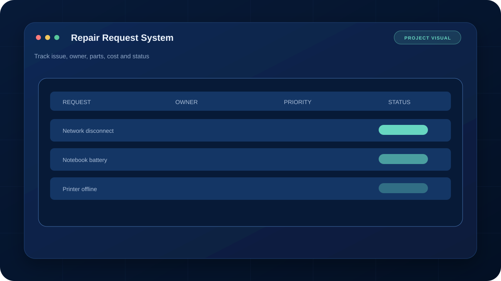
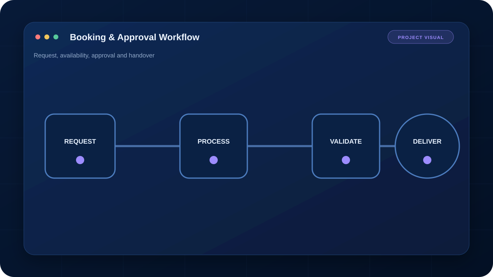
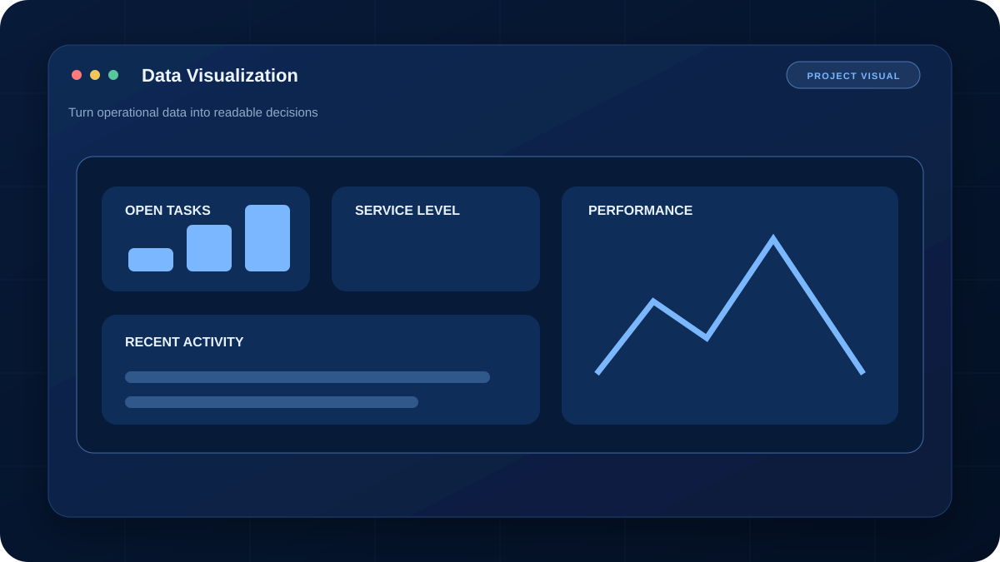
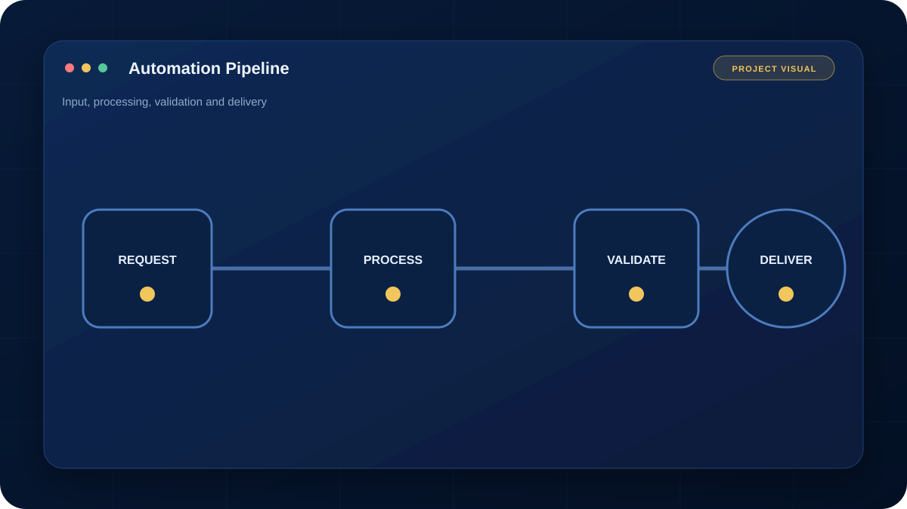
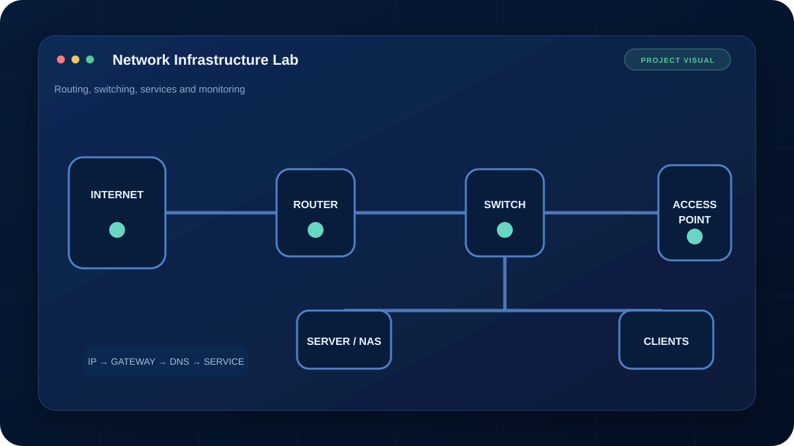

PRIVATE IT PROCUREMENT
IT Procurement Intensive
ออกแบบหลักสูตรจาก Requirement งานจัดซื้อ แบ่ง Core 3 วัน และภาคเสริม Enterprise ตามความจำเป็น
ใช้หลักฐานจากไฟล์งานจริงแทนภาพตัวอย่างทั่วไป พร้อมปกปิดข้อมูลส่วนตัวของลูกค้า
คัดเฉพาะงานที่อธิบายโจทย์ วิธีทำ และสิ่งที่ลูกค้าได้รับจริง โดยปกปิดข้อมูลส่วนบุคคล
ออกแบบหลักสูตรจาก Requirement งานจัดซื้อ แบ่ง Core 3 วัน และภาคเสริม Enterprise ตามความจำเป็น

จัดคู่มือ Hardware, Operating System, Windows 11, File Management และภารกิจฝึกตามพื้นฐานผู้เรียน

ปรับภารกิจตามความเร็วผู้เรียน พร้อม Playbook, HTML Games และไฟล์โปรเจกต์ที่นำไปพัฒนาต่อได้
รวบรวมจาก Portfolio เดิม ครอบคลุมงาน IT Support, Web System, Network, Cloud, Automation, Data และ Robotics โดยไม่เปิดเผยชื่อหน่วยงาน

แก้ปัญหา Windows 10/11, Driver และ Remote Support สำหรับผู้ใช้และองค์กร
ระบบงานภายในหลายโมดูลด้วย Web และ Google Apps Script พร้อมระบบแจ้งเตือน

รับแจ้ง ติดตามสถานะ สรุปค่าใช้จ่ายและประวัติการซ่อมวัสดุหรือครุภัณฑ์

ระบบจองห้องออนไลน์ ตรวจสอบช่วงเวลาว่าง และจัดการข้อมูลการใช้งาน
ระบบส่งคำขอ ตรวจสอบคิว และจัดการข้อมูลการใช้รถภายในองค์กร

Dashboard สรุปข้อมูลและสถานะงานเพื่อให้ติดตามภาพรวมได้ง่ายขึ้น

สร้างวิดีโอรูปแบบ Notes อัตโนมัติด้วย Python, Pillow, FFmpeg และ GitHub Actions
เชื่อม Domain ผ่าน Cloudflare ไปยัง AWS พร้อม HTTPS และ Container
จัดสภาพแวดล้อม Container สำหรับงาน WebML ด้วย Docker Compose และ GitHub

ทดลองติดตั้งและดูแล Virtual Machine, Hypervisor และ Infrastructure Lab
ออกแบบเครือข่ายแยกแผนก พร้อม DHCP, DNS, Routing และ Web Server
ทดลองตรวจสอบอุปกรณ์เครือข่ายและเก็บสถานะการทำงานผ่าน SNMP
ฝึกวิเคราะห์ Routing, Switching และ Configuration จากอาการเสียจริง
จำลอง Routing ระหว่าง Autonomous Systems และตรวจสอบเส้นทาง WAN
คู่มือวิเคราะห์ปัญหา Internet ด้วย ipconfig, ping, tracert และลำดับการตรวจ
ทดลองควบคุมและพัฒนาหุ่นยนต์ด้วย Arduino, Cytron และ Pop32i
สร้างรายงานและ Dashboard เพื่อสรุปข้อมูลและนำเสนอ Insight ที่อ่านง่าย
กำหนด Scope ชัดเจน ส่งมอบไฟล์ที่ตกลง และสรุปวิธีใช้งานหรือแนวทางดูแลต่อ
แยกปัญหา เป้าหมาย ผู้ใช้ และข้อจำกัดก่อนเริ่มออกแบบหรือสอน
แบ่งขั้นตอนให้ตรวจสอบได้ พร้อมปรับตาม Feedback ที่อยู่ใน Scope
มีไฟล์ คู่มือ วิดีโอ หรือคำอธิบายตามประเภทงานและข้อตกลง

ติดต่อได้หลายช่องทาง เลือกช่องทางที่สะดวก แล้วส่งรายละเอียดงานมาให้ประเมินได้เลย